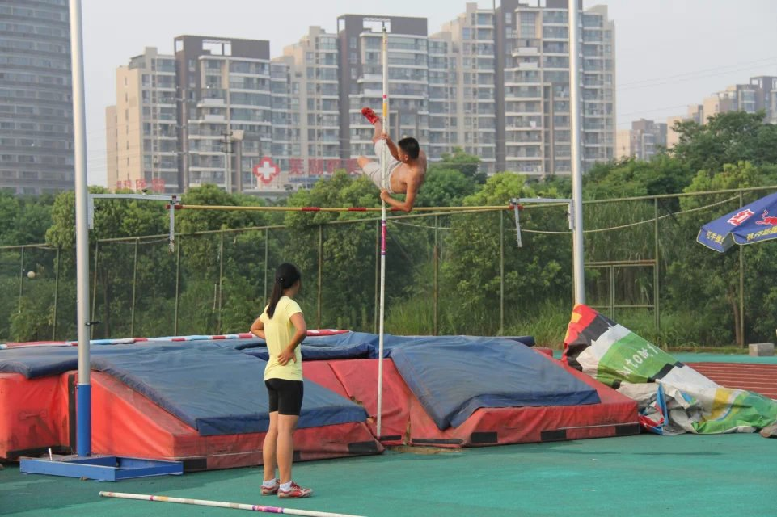

Sports
When it comes to sports, the reason I love them is because they're the best way to truly interact with others, the world, and myself.
Running
I've always enjoyed running growing up and participated in many competitions. My best 100-meter time was 12.3 seconds when I was 18. I didn't formally record my 200m or 400m times.
I started marathon running after being diagnosed with fatty liver and wanting to lose weight. I was also inspired by the anime Run with the Wind. I completed my first marathon in 2024 without any preparation. You can view my records here:
2024 Marathon
2025 Marathon
Find me on Strava: https://strava.app.link/yktpd1EGUTb
Running gives me both mental and physical strength. It gives me time to reflect on life, push my limits, and work toward becoming a better version of myself.
Pole Vaulting
I was also a collegiate athlete at AHNU when I was 18. In Chinese college sports, there are three groups: A (general students), B (professional athletes), and C (elite athletes). I was in Group A and represented AHNU at the provincial games. I placed 8th in pole vaulting with a jump of 2.9 meters. Interestingly, I originally trained for the 800m and 1500m events, but the coach realized I wouldn't score points there. So they switched me to pole vaulting — and after just 3 months of training, I managed to score. I was almost cut from the team before that.

MMA
I practiced taekwondo growing up. After coming to the U.S., I picked up MMA because I wanted to become stronger and tougher. But as I've grown older, I've started prioritizing my health and safety, so I stopped MMA and now focus solely on running. Here's a sparring video from 2021 with a professional MMA fighter:
League of Legends
I was very lucky to join UNL's varsity League of Legends team in 2024. We competed in the CCL and won the Fall 2024 Championship.
Yes, I'm addicted to video games, and I've spent a lot of time reflecting on that. My peak rank was Master 450 LP, but I've since retired because I realized this game wouldn't contribute to my future path.
That said, I learned a tremendous amount from League. It taught me how to be an effective team player in a Western team environment, and I truly cherish the time spent with my teammates. Although esports may not be as physically demanding as traditional sports, the mental intensity is just as high—if not higher.
The program was scholarship-sponsored, but since I already had an assistantship, I didn't receive any financial benefit. Here's the video of our victory: